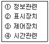
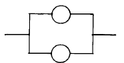
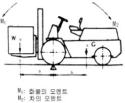
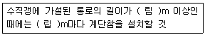

산업안전산업기사 (2002-03-10 기출문제)
1과목: 산업안전관리론
1. 작업태도 분석에 의한 동기 파악방법의 연구과정은?
- 요인→ 태도→ 결과
- 태도→ 결과→ 요인
- 결과→ 요인→ 태도
- 태도→ 요인→ 결과
(정답률: 52%)

2. 다음중 재해 방지 기본 원칙중 해당되지 않는 것은?
- 대책 선정 원칙
- 손실 우연 원칙
- 예방 가능 원칙
- 통계의 원칙
(정답률: 77%)
3. 재해코스트에서 직접비는 다음중 어느 것인가?
- 회사내의 직접적인 손실비
- 보험에서 지급되는 비용
- 재해자의 재해발생시 인건비
- 행정손실에 따른 발생비용
(정답률: 41%)
4. 피로측정방법 중 정신적 변화를 이용한 측정방법은?
- 반사기능
- 감각기능
- 대사물의 질량변화
- 자세의 변화
(정답률: 40%)
5. 안전을 위한 동기부여로 옳지 않은 것은?
- 안전목표를 명확히 설정하여 주지시킨다.
- 상벌제도를 합리적으로 시행한다.
- 경쟁과 협동을 유도한다.
- 기능을 숙달시킨다.
(정답률: 53%)
6. 조직의 환경상태가 불확실 할 때 리더쉽의 유형이 어떤형이 될 것인가?
- 권위형
- 방임형
- 민주형
- 독재형
(정답률: 31%)
7. 버드(Frank Bird)의 재해 발생 이론에서 첫번째 요인인 제어의 부족 내용에 해당되지 않는 것은?
- 안전계획 및 직무계획의 책정
- 직무활동에 있어 시설기준 설정
- 불안전 행동의 징후
- 설정된 기준에 의한 실적 평가
(정답률: 45%)
8. 안전교육 과정 중 "할 수 있다"라는 즉 피교육자가 그것을 스스로 행함으로서만 얻어지는 교육내용에 해당하는 것은?
- 안전지식의 교육
- 안전의식의 교육
- 안전태도의 교육
- 안전기능 교육
(정답률: 29%)
9. Hershey A.B의 피로대책의 원칙 중 단조로움, 권태감에 의한 피로대책은?
- 작업교대를 실시하는 일
- 용의 주도한 작업계획 수립 이행
- 불필요한 마찰을 배제하는 일
- 일의 가치를 가르치는 일
(정답률: 42%)
10. 흰색 바탕에 빨간색 기본모형의 안전, 보건 표지판의 종류는 어느 것인가?
- 지시
- 금지
- 경고
- 안내
(정답률: 65%)
11. 연간 근로 총시간수가 58만 시간이고 이 기간중에 휴업재해가 7건 발생했다. 도수율은?
- 10.90
- 11.76
- 12.07
- 12.86
(정답률: 58%)
12. 다음 중 학습에 직접적인 영향을 미치는 요인이 아닌 것은?
- 적성(Aptitude)
- 동기유발(Motivating)
- 준비도(Readiness)
- 기억과 망각(Memory, Forgetting)
(정답률: 40%)
13. 에너지 대사율(R.M.R)이 높은 작업의 경우 사고예방 대책은 어느 것인가?
- 작업시간 연장
- 휴식시간 증가
- 임금의 증액
- 작업의 전환
(정답률: 75%)
14. 연간 평균 근로자수가 1000명을 채용하고 있는 사업장에서 연간 6건의 재해가 발생한다고 할 때 빈도율은 ? (단, 일일 근로시간수는 4시간, 연평균근로일수는 150일)
- 1000
- 100
- 10
- 1
(정답률: 56%)
15. 문제해결 4단계에서 대책 수립 몇 단계는?
- 1단계
- 2단계
- 3단계
- 4단계
(정답률: 62%)
16. 다음 중 수강자와 교재 중심의 개별학습이 아닌 것은?
- 발견학습
- 과제학습
- 수용학습
- 프로그램 학습
(정답률: 34%)
17. 교육과제에 정통한 전문가 4∼5명이 피교육자 앞에서 자유로이 토의를 실시한 다음에 피교육자 전원이 참가하여 사회자의 사회에 따라 토의하는 방식에 해당되는 것은?
- 포럼(forum)
- 패널 디스커션(panel discussion)
- 심포지엄(symposium)
- 버즈 세션(buzz session)
(정답률: 58%)
18. 다음 중 안전점검의 목적과 관계가 가장 적은 것은?
- 결함이나 불안전 조건의 제거
- 합리적인 생산관리
- 기계설비의 본래의 성능 유지
- 인간 생활의 복지 향상
(정답률: 67%)
19. 안전모의 성능시험항목에 따른 성능기준이 종류 AE, ABE종 안전모는 질량 증가율이 1% 미만이어야 하는 항목은?
- 충격흡수성
- 내전압성
- 내수성
- 난여성
(정답률: 42%)
20. 안전관리 조직의 기본 방식이 아닌 것은?
- line system
- staff system
- line-staff system
- safety system
(정답률: 73%)
2과목: 인간공학 및 시스템안전공학
21. 인간-기계통합 체계에서 인간 또는 기계에 의해서 수행되는 4가지 기본 기능 중 다른 세가지 기능 모두와 상호작용 하는 것은?
- 감지
- 정보 보관
- 행동 기능
- 정보처리 및 의사결정
(정답률: 35%)
22. 조명강도를 높인 결과 작업자들의 생산성이 향상되었고 그후 다시 조명강도를 낮추어도 생산성의 변화는 거의 없었다. 라는 결과는 다음중 어느 실험의 결과인가?
- Heinrich 실험
- Compes 실험
- Birds 실험
- Hawthorne 실험
(정답률: 40%)
23. 제품을 안전하게 만드는 기본 수법과 거리가 먼 것은?
- 제품 책임을 명시한다.
- 제품에서 위험성을 배제하여 설계한다.
- 보호장치나 차폐장치로 위험 가능성으로부터 보호한다.
- 올바른 사용법, 적절한 경고사항과 사용설명을 제공한다.
(정답률: 40%)
24. 다음 중 귀납적이고 정량적인 위험분석방법은?
- FMEA
- ETA
- THERP
- MORT
(정답률: 36%)
25. 인간과 기계능력에 대한 실용성 한계에 대한 내용과 거리가 먼 것은?
- 일반적인 인간-기계 비교가 항상 적용된다.
- 상대적인 비교는 항상 변하기 마련이다.
- 기능의 수행이 유일한 기준은 아니다.
- 최선의 성능을 마련하는 것이 항상 중요한 것은 아니다.
(정답률: 43%)
26. Fail safe와 거리가 가장 먼 것은?
- Feed back
- Fool proof
- Inter lock
- Trap system
(정답률: 33%)
27. 시스템 퍼포먼스(SP)와 휴먼에러(HE)와의 관계는 SP=f(HE)=K(HE)로 나타낸다. (단, f:함수, K:상수)다음중 휴먼에러가 시스템 퍼포먼스에 대하여 중대한 영향을 일으키는 것은?
- K=1
- K<1
- K>1
- K=0
(정답률: 34%)
28. 다음 기계조작시 출력응답에 속하는 반응은?
- 표시램프의 점멸
- 사이렌소리
- 레바의 조작
- 기계의 기능정지
(정답률: 39%)
29. 시스템 안전분석 기법중 시스템 디자인 단계에서 처음으로 사용되는 것은?
- FTA
- FHA
- PHA
- OHA
(정답률: 44%)
30. 인간-기계 기능계 체계에서 기능에 형태에 속하지 않는 것은?
- 경고신호
- 행동기능
- 감지
- 정보저장
(정답률: 36%)
31. 위험 및 운전성 검토(HAZOP)에서 성질상의 감소를 나타내는 유인어(guide words)는?
- MORE LESS
- PART OF
- AS MORE AS
- MUCH LESS
(정답률: 33%)
32. 숫자,영문자,기하학적 형상,구성중 암호로서의 성능이 가장 좋은 것부터의 순서의 배열은?
- 기하학적형상 - 숫자 - 구성 - 영문자
- 구성 - 기하학적형상 - 영문자 - 숫자
- 영문자 - 구성 - 숫자 - 기하학적형상
- 숫자 - 영문자 - 기하학적형상 - 구성
(정답률: 55%)
33. 제어장치의 레바를 2cm 이동시켰더니 표시장치의 지침이 8cm 이동하였다. 이 계기의 통제표시비(C/D)는 얼마인가?
- 0.15
- 0.25
- 0.35
- 0.45
(정답률: 61%)
34. 작업장 소음의 영향과 거리가 먼 것은?
- 청취촉진 효과
- 주위 산만 효과
- 각성 효과
- 작업능률감소 효과
(정답률: 38%)
35. 다음중 인간 기계 시스템에서의 신뢰도 유지방안이 아닌것은?
- fail - safe system
- control system
- fool - proof system
- lock system
(정답률: 43%)
36. 인간-기계 시스템(man-machine system)에서 조작상 인간 에러발생 빈도수의 순서로 맞는 것은?

- ①-②-③-④
- ①-②-④-③
- ①-④-③-②
- ②-①-③-④
(정답률: 40%)
37. 위험작업분석시 고려해야 할 사항이 아닌 것은?
- 육체적 요구조건
- 작업환경 조건
- 보건상 위험성
- 교육훈련의 조건
(정답률: 45%)
38. 인간공학에서 사용되는 인간기준의 4가지 유형에 속하지 않는 것은?
- 사고빈도
- 인간성능척도
- 생리학적지표
- 작업만족도
(정답률: 41%)
39. 고장율이 λ 인 지수분포를 갖는 동일한 두 개의 독립적인 부품의 병렬구조 시스템의 신뢰도는 얼마인가?

- R(t) = e-λt·e-λt
- R(t) = 2e-λt-e-2λt
- R(t) = λ ,λ
- R(t) = 1 - (1-λ )·(1-λ )
(정답률: 27%)
40. 어떤 결함수의 쌍대결함수를 구하여 컷셋을 구하면 이 컷셋은 본래 결함수의 무엇에 해당되는가?
- 컷셋
- 패스셋
- 최소컷셋
- 최소패스셋
(정답률: 32%)
3과목: 기계위험방지기술
41. 다음 중 리밋트 스위치(limit switch)에 의한 안전장치가 아닌 것은?
- 권과 방지 장치
- 게이트 가아드(gate guard)
- 벨트 이동장치(velt shifter)
- 이동식 덥개
(정답률: 27%)
42. 직경 30mm인 연강을 선반에서 절삭할 때 스핀들 회전수는 ?(단, 절삭속도는 20m/min이다.)
- 132rpm
- 212rpm
- 360rpm
- 418rpm
(정답률: 41%)
43. 톱위 뒷(back)날 바로 가까이에 설치되고 절삭된 가공재의 홈사이로 들어가면서 가공재의 모든 두께에 걸쳐 쐐기 작용을 하여 가공재가 톱자체를 조이지 않게 하는 안전장치는?
- 분할날
- 반발방지장치
- 날접촉예방장치
- 가동식 접촉예방장치
(정답률: 39%)
44. 압력용기 및 부속품으로 사용하는 재료의 허용인장응력은 철강재료의 최대사용온도가 350℃이하인 경우에 페라이트계 강재의 최대허용응력에 대한 최소값 중에 사용하도록 되어 있다. 틀린 것은?
- 실온도에서 최소인장강도의 1/2
- 실온도에서 인장강도의 1/4
- 실온도에서 최소항복점의 5/8
- 설계온도에서 항복점 5/8
(정답률: 30%)
45. 보일러에서 스켈(scale)의 악영향으로 가장 적합한 것은?
- 국부과열
- 비수작용
- 물망치 작용
- 파이프 누설
(정답률: 39%)
46. 롤러의 맞물림전 전방에 개구 간격 30mm의 가드를 설치하고자 한다. 개구면에서 위험점 까지의 최단거리(mm)는 ? (단, I.L.O.기준에 의해 계산한다.)
- 80(mm)
- 100(mm)
- 120(mm)
- 160(mm)
(정답률: 29%)
47. 한계하중 이하의 하중이라도 일정하중을 지속적으로 가하면 시간의 경과에 따라 변형이 증가하고 결국은 파괴에 이르게 되는 현상을 무엇이라 하는가?
- 크리이프(creep)
- 피로(fatigue)
- 응력집중
- 응력부식
(정답률: 42%)
48. 안전율(허용응력) 결정시 고려해야 할 사항에 속하지 않는 것은?
- 재료의 품질
- 하중과 응력의 정확성
- 공작방법 및 정밀도
- 사용시의 상태
(정답률: 33%)
49. 취급운반의 5원칙 중 관계가 먼 것은?
- 연속운반으로 할 것
- 직선운반으로 할 것
- 운반작업을 집중화 할 것
- 손이 닿는 운반 방식으로 할 것
(정답률: 52%)
50. 그림과 같은 포오크리프트에서 W를 화물중량, G를 지게차 자체중량, a를 앞바퀴부터 화물의 중심까지의 최단거리, b를 앞바퀴 중심에서 지게차의 중심까지의 최단거리라고 할 때 지게차 안정조건은 ?(단, W:화물중량, G:차량의 중량, a:전차륜에서 화물의 중심까지의 최단 거리, b:전차륜에서 차량의 중심까지의 최단거리) (복원 오류로 보기 내용이 정확하지 않습니다. 내용을 아시는분께서는 오류 신고를 통하여 내용 작성부탁 드립니다. 정답은 1번입니다.)

- Wxa ＜ Gxb
- W ＜ G 복원중 b/a
- Wxa ＞ Gxb
- W ＞ G 복원중 b/a
(정답률: 61%)
51. 가공기계의 방호조치에서 반드시 방호장치를 설치하지 않아도 되는 것은?
- 동력 전달부분
- 주유구
- 작업점
- 이송장치
(정답률: 53%)
52. 선반작업시 사용되는 방호장치는?
- 풀아우트(Full Out)
- 게이트 가아드(Gate Guard)
- 스위프 가아드(Sweep Guard)
- 쉴드(Shield)
(정답률: 57%)
53. 다음은 안전율을 구하는 식이다. 틀린 것은?
- 극한강도/최대설계응력
- 파괴하중/안전하중
- 파괴하중/최대사용하중
- 사용하중/안전하중
(정답률: 37%)
54. 밀링작업에서 커터날의 개수가 10매, 직경이 100㎜, 날하나에 대한 이송이 0.4㎜이며 절삭속도 90m/min으로 연강재를 절삭하는 경우 테이블의 이송속도는?
- 약1.15(m/min)
- 약2.54(m/min)
- 약3.36(m/min)
- 약4.48(m/min)
(정답률: 18%)
55. 행정길이가 40mm 이상의 프레스에 적당한 방호장치의 종류는?
- 감응식, 수인식
- 양수조작식, 게이트가드식
- 감응식, 양수조작식
- 손쳐내기식, 수인식
(정답률: 44%)
56. 산업용 로봇의 방호장치로 옳은 것은?
- 압력방출 장치
- 안전매트
- 과부하 방지장치
- 자동전격 방지장치
(정답률: 51%)
57. 동력 전달장치의 방호대책 중 틀린 것은?
- 건널다리의 손잡이 높이는 90cm 이상이다.
- 밸트의 이음부분에는 돌출된 고정구를 사용하여서는 안된다.
- 방호장치로는 덮개, 울, 슬리이브 및 건널다리가 있다.
- 수리, 조정, 검사 등을 위하여 개구부는 적당한 크기로 항상 열어둔다.
(정답률: 60%)
58. 로울러기의 급정기를 위한 방호장치를 설치하고자 한다. 앞면 로울러의 직경이 30㎝, 회전속도가 40(m/min)이라면 어떤 성능이 급정지 장치를 부착해야 하는가?
- 급정지 거리가 앞면로울러 원주의 1/3 이내인 것
- 급정지 거리가 앞면로울러 원주의 1/3 이상인 것
- 급정지 거리가 앞면로울러 원주의 1/2.5 이내인 것
- 급정지 거리가 앞면로울러 원주의 1/2.58 이상인 것
(정답률: 40%)
59. 동력에 의하여 작동되는 기계.기구 중 회전기계 물림점에 대하열 방호조치를 하여야 한다. 방호장치로 옳은 것은?
- 덮개 또는 울
- 묻힘형, 덮개
- 덮개, 방호망
- 가드, 울
(정답률: 48%)
60. 재료의 강도시험 중 인장시험으로 알 수 없는 기계적 성질은?
- 탄성한도(elastic limit)
- 항복점(yielding point)
- 피로(fatigue)
- 연신율(elongation strength)
(정답률: 42%)
4과목: 전기 및 화학설비위험방지기술
61. 관을 지나는 유체의 온도변화로 인해 일어나는 배관의 변형을 방지하기 위해 설치하는 관 부속품이 아닌 것은?
- 팽창곡관
- 캡
- 플렉시블조인트
- 루프형 신축이음쇠
(정답률: 46%)
62. 폭발 상한계가 100%인 가스를 설명한 것 중 올바르지 못한 것은?
- 폭발상한계가 100%인 가스는 공기가 없는 조건에서도 폭발이 일어난다.
- 폭발 상한계가 100%인 가스는 분해폭발성 가스다.
- 폭발 상한계가 100%인 가스는 폭발하한계와 연소하한계가 다르다.
- 아세틸렌, 산화에틸렌은 폭발상한계가 100%인 가스이다.
(정답률: 30%)
63. 다음의 내용중 단위조작(물리적공정)에 해당되는 것은?
- 중합
- 축합
- 산화
- 증류
(정답률: 40%)
64. 고압용 비포장퓨즈(고리형퓨즈)의 구성요소가 아닌 것은?
- 철연판
- 저온용융부
- 플라스틱커버
- 절연스프링
(정답률: 24%)
65. 폭발성 물질의 성질을 나타낸 것으로 옳은 것은?
- 폭발이 쉬운 것은 폭발위력이 작다.
- 폭발이 쉬운 것은 폭발위력이 크다.
- 폭발이 어려운 것은 폭발위력이 작다.
- 산소균형(oxygen balance)치가 0 에 가까우면 폭발 위력이 작다.
(정답률: 31%)
66. 일반적으로 전기 기기의 누전으로 인한 감전 재해의 방지 대책으로서 해당 없는 것은?
- 보호 접지법
- 이중 절연 기기의 사용
- 감전 방지용 누전 차단기의 사용
- 전로의 채용
(정답률: 57%)
67. 증류탑의 운전을 개시하기 직전의 탑내의 잔류산소는 몇 % 이하로 해야 하는가?
- 1%
- 2%
- 5%
- 10%
(정답률: 25%)
68. 분진폭발이 일어나지 않는 물질은?
- 마그네슘
- 스텔라이트
- 소맥분
- 질석가루
(정답률: 49%)
69. 정전기의 발생에 영향을 주는 요인중에서 가장 관계가 먼 것은?
- 물질의 표면상태
- 물질의 분리속도
- 물질의 특성
- 물질의 온도
(정답률: 46%)
70. 폭발성물질의 폭발을 일으키는 팽창력의 원인이 되는 것은?
- 폭발성물질은 급속한 화학반응이 일어나면서 다량의 가스와 열을 발생시키기 때문이다.
- 폭발시 동반하는 폭음이 그 원인이 된다.
- 폭발시 발생하는 충격파가 원인이 된다.
- 충격· 마찰· 타격· 낙하등에 의해 자기반응성물질에 주어지는 점화에너지가 그 원인이다.
(정답률: 42%)
71. 정전기의 재해방지대책 중에서 제전기의 종류와 특성에서 틀린 것은 ? (순서대로 구분-전압인가식-자가방정식-방사선식)
- 제전능력 - 크다 - 보통 - 작다
- 구조 - 복잡 - 간단 - 간단
- 취급 - 복잡 - 간단 - 간단
- 적용범위 - 좁다 - 넓다 - 넓다
(정답률: 34%)
72. 다음은 분진에 대한 방폭구조의 설명이다. 틀린 것은?
- 보통 방진 방폭구조 : 전폐구조로 접합면 깊이를 일 정치 이상으로 하든가 접합면에 패킹을 사용하여 분진이 침입하기 어렵게 한 구조
- 특수 방진 방폭구조 : 전폐구조로 접합면이 깊이를 일정치 이상으로 하든가 접합면에 일정치 이상의 깊이를 갖는 패킹을 사용하여 분진침입을 막는 구조
- 몰드 방폭구조 : 폭발성 가스 또는 증기에 점화시킬 수 있는 전기기기의 불꽃 또는 고온 발생부분을 콤파운드 등으로 밀폐한 구조
- 방진 특수 방폭구조 : 특수 방진, 보통방진 구조이외의 구조로서 방진 특수 방폭성능이 있는 것으로 확인된 구조
(정답률: 35%)
73. 방적공장의 난방용 스팀파이프에 분진이 퇴적되어 있었다. 한겨울에 난방용스팀을 공급한지 몇 일이 지났을 때 스팀파이프의 퇴적된 분진에서 연기가 발생하였다. 이 때 점화원으로 예상할 수 있는 것은?
- 분진의 분해연소열
- 정전기 방전
- 열복사현상
- 자연발화현상
(정답률: 24%)
74. 전기화재 방지를 위한 안전조치와 관련이 없는 것은?
- 퓨즈
- 누전차단기
- 누전화재 경보기
- 검전기
(정답률: 53%)
75. 최소 착화에너지가 0.25(mJ)인 부탄가스 버너의 극간 정전 용량이 10(PF)일 경우에 이 버너를 점화시키기 위해서는 최소한 얼마 이상의 전압을 인가해야 하는가?
- 0.52× 102(V)
- 0.74× 102(V)
- 7.07× 103(V)
- 5.03× 107(V)
(정답률: 42%)
76. 물이나 기름 또는 화학약품을 많이 사용하는 작업장의 바닥(마루)의 재료로 가장 알맞는 것은?
- 아스팔트 페이스트로 굳힌 모래
- 아스팔트 몰탈
- 에폭시수지
- 고무액 혼합의 몰탈
(정답률: 36%)
77. 전기불꽃이나 과열에 대해서 회로특성상 폭발의 위험을 방지할 수 있는 방폭구조는?
- 내압 방폭구조
- 안전증 방폭구조
- 유입 방폭구조
- 압력 방폭구조
(정답률: 41%)
78. 습기가 많은 작업장, 욕실등에서 누전등에 의한 감전 위험을 에방하기 위한 이동용 전선으로서 적합한 것은?
- 비닐전선
- 금사 코오드
- 비닐 캡타이어 케이블
- 고무 캡타이어 코드
(정답률: 52%)
79. 연소의 3요소가 아닌 것은?
- 연쇄반응
- 열
- 공기
- 가연성 물질
(정답률: 61%)
80. 다음 중금속의 먼지중 비중격 천공을 잘 일으키는 중금속은?
- 수은
- 크롬
- 납
- 니켈
(정답률: 30%)
5과목: 건설안전기술
81. 도갱의 중앙부에서 최초로 폭발시키는 구멍을 무엇이라 하는가?
- 측면구멍
- 심빼기구멍
- 상면구멍
- 하면구멍
(정답률: 49%)
82. 다음 중 승강기의 종류에 해당하지 않는 것은?
- 승용승강기
- 에스컬레이터
- 화물용승강기
- 리프트
(정답률: 40%)
83. 다음 중 블리딩(Bleeding)이 발생하는 원인은?
- 거푸집을 빨리 제거하여 발생
- 물을 많이 사용했기 때문에 발생
- 철근의 이음이 잘못되어 발생
- 부적당한 골재나 지나치게 큰 자갈을 사용했기 때문에 발생
(정답률: 40%)
84. 다음 중 양중기의 종류에 해당하지 않는 것은?
- 크레인
- 곤도라
- 승강기
- 항타기
(정답률: 56%)
85. 보통 흙의 굴착공사에서 굴착높이가 5m, 굴착기초면의 폭이 5m인 경우 양단면 굴착을 할 때 상부 단면의 폭은 ? (단, 굴착구배는 1:1로 한다)
- 10m
- 15m
- 20m
- 25m
(정답률: 43%)
86. 철근콘크리트에 있어서 부착응력에 대하여 검토해야 할 철근은?
- 압축철근
- 인장철근
- 절곡철근
- 배력철근
(정답률: 38%)
87. 낙하물 방지설비 중 제3자 보호설비가 아닌 것은?
- 양생철망
- 양생시트
- 방호선반
- 석면포
(정답률: 47%)
88. 토사붕괴의 외적원인이 아닌 것은?
- 토석의 강도 저하
- 절토 및 성토 높이의 증가
- 사면법면외의 경사 및 기울기 증가
- 지표수 및 지하수의 침투에 의한 토사 중량 증가
(정답률: 46%)
89. 크레인이 가공전선로에 접촉하였을 때 운전자의 조치사항으로 틀린 것은?
- 접촉된 가공 전선로에서 크레인을 이탈시킨다.
- 만약 끊어진 전선이 크레인에 감겼을 때에는 이를 풀어낸다.
- 운전석에서 일어나 크레인에 몸이 닿지 않도록 주의하여 뛰어내린다.
- 뛰어내린후 크레인 반대방향으로 탈출한다.
(정답률: 55%)
90. 낙하물 방지를 위하여 비계의 외부에 설치하는 방호선반의 내민길이와 수평면에 대한 각도는 각각 얼마인가?
- 2m이상 돌출, 20도이상
- 2m이상 돌출, 40도이상
- 3m이상 돌출, 30도이상
- 3m이상 돌출, 40도이상
(정답률: 34%)
91. 비계 작업발판의 최대 적재하중에 관한 규정 중 달기 체인 및 달기 후크의 안전계수는?
- 3 이상
- 5 이상
- 7 이상
- 10 이상
(정답률: 43%)
92. 다음 중 고정사다리 설치시 수평면에 대한 경사각으로 가장 적합한 것은?
- 90°
- 60°
- 45°
- 30°
(정답률: 26%)
93. 다음 중 사면이 가장 위험한 때는 언제인가?
- 사면의 수위가 급격히 하강할 때
- 사면의 흙이 완전건조 상태일 때
- 사면의 수위가 천천히 하강일 때
- 사면의 흙이 완전포화 상태일 때
(정답률: 50%)
94. 철골공사 중 리벳치기나 볼트작업을 하기 위하여 구조체인 철골에 매어달아 작업발판을 만드는 비계로서 상하 이동을 시킬수 없는 것은?
- 달대비계
- 말비계
- 이동식 비계
- 달비계
(정답률: 36%)
95. 도심지에서 주변에 주요시설물이 있을 때 침하와 변위를 적게할 수 있는 적당한 흙막이 공법은?
- 동결공법
- 강널말뚝공법
- 지하연속벽공법
- 뉴매틱케이슨공법
(정답률: 43%)
96. 지붕 및 슬래브 지주의 존치기간은 콘크리트의 압축강도가 설계기준강도의 몇 %를 발휘할 때까지 존치시켜야 하는가?
- 75 %
- 85%
- 95%
- 100%
(정답률: 34%)
97. 통나무 비계는 강관비계보다 안전상 취약하다. 통나무 비계의 사용을 제한해야 하는 지상 높이는?
- 3층 이하
- 4층 이하
- 5층 이하
- 6층 이하
(정답률: 38%)
98. 콘크리트 거푸집을 설계할 때 고려해야 하는 연직하중으로 거리가 먼 것은?
- 작업하중
- 콘크리트 자중
- 충격하중
- 풍하중
(정답률: 56%)
99. 다음 ( ) 안에 알맞는 수치는?

- 림 8m, 립 7m
- 림 15m, 립 10m
- 림 8m, 립 10m
- 림 15m, 립 7m
(정답률: 42%)
100. 굴착면 붕괴의 원인과 관계가 먼 것은?
- 사면경사의 증가
- 성토 높이의 감소
- 공사에 의한 진동하중의 증가
- 굴착높이의 증가
(정답률: 49%)